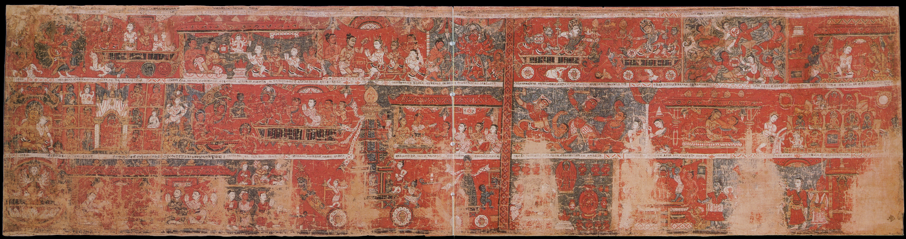

The Project
About
A digital archive built with the guidance of scholars in Nepal and the United States, so that a painting far from home can be read again by the communities whose history it records, and by anyone drawn to it.
How it all started
The ideation of the project
This project began as a final paper for a class called Art and Material Culture of Tibet, taught by Dr. Melissa R. Kerin. Abhishek Pradhan originally took the class just to fulfill an art credit requirement at his college. But when he decided to write his paper on bilampaus, he stumbled upon two paintings that stayed with him long after the semester ended.
Both paintings tell the same story of the deity Bunga Dyo. One is kept at the Philadelphia Museum of Art (PMA), and the other is in the Himalayan Art Resources (HAR) database. By comparing them side by side, Abhishek noticed that every scene in one painting matched a scene in the other. He realized these paintings were like storybooks; they used a visual pattern to ensure the legend was told faithfully.
While the PMA bilampau was dated 1712 AD on the museum’s website, the HAR bilampau had no information at all, not even a date. He had many more questions, so he reached out to Dr. Naresh Man Bajracharya, who then read the old Prachalit inscriptions and found that, as in the PMA painting, the third register of the HAR painting contained a recorded date. However, this date was Nepal Sambat 737, which converts to 1616 CE. This meant that nearly a century later, an artist was asked to create an accurate copy of the same Bunga Dyo painting, likely to decorate the commissioner’s house and, above all, to remember the legend of the deity and the rituals of the living tradition.
After finishing the class and the final paper, Abhishek felt he hadn’t fully discovered the painting. It was clear how much is lost when inscriptions go unread. This digital archive grew out of that concern: to read the painting again in full and to restore its voice, making it a historical object rather than merely decorative. While the bilampau is displayed in Philadelphia and often viewed as art, the Nepalese people, especially the Newar community, see it as a representation of their beloved traditions. This project is a small effort toward a larger movement to reconnect Himalayan art with its living cultural context rather than viewing it as a static museum object, so that we can finally prioritize function over form.


HAR · 1616 CE PMA · 1712 CEFurther reading
What the gallery takes off
Writing about Kashmiri sculptures worshipped in the Western Himalayas, the art historian Rob Linrothe describes two opposing ways of encountering a sacred object: “contaminated” and “decontaminated”. Devotion is the “contaminated” mode: it touches the image, dresses it, burns butter lamps before it, and leaves offerings until the sculpture underneath can no longer be seen clearly. The museum operates in the “decontaminated” mode, removing the cloth and ornament so that nothing stands between the eye and the object but glass, and placing it next to a label and wall text where the offerings used to be.
Linrothe does not argue that museums are wrong to do this. He argues that what is removed was never decoration and that its removal should be named rather than mistaken for cleaning. This archive is built on the same idea: the inscriptions, the donors, and the rituals are not additions to the painting. They are the painting.
Rob Linrothe, Collecting Paradise: Buddhist Art of Kashmir and Its Legacies (Rubin Museum of Art, 2014), introduction. Melissa R. Kerin, this project’s faculty advisor, is a co-author of the same catalogue and makes a related argument about museum shrine rooms in The Fetishistic Fiction of Museums’ “Tibetan” Shrines ↗
People
Project author
Abhishek Pradhan
Biography forthcoming.
Transliteration & iconography study
Dr. Naresh Man Bajracharya
Biography forthcoming.
Transliteration & iconography study
Dr. Puspa Ratna Sakya
Biography forthcoming.
Faculty advisor
Prof. Melissa Kerin
Biography forthcoming.
Acknowledgements
Gratitude to the people and institutions who made this project possible will appear here.